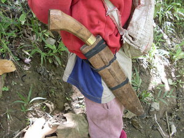

siniket1 
/sinikɔt/
n.
“belt”
n.
the rope or belt holding a bolo sheath onto someone's waist
Wrd.Gloss: belt
Eng. belt; waist strap
Online dict status: -
Usage level: M
v.
for someone (egsisiniket, migsisiniket/insisiniket, agent, eg><ø-rdpCV-) to tie something (especially a machete ugpit) around one's waist
Egsisiniket dè due ka anggam ku te ugpit minsan hendei rin egpeendiyè.
My uncle always ties on a bolo no matter where he's going.
Eng. belt on; mount on belt; tie on waist; wear around waist
Online dict status: -
Usage level: M
Updated by: RJH,AAA,QDL,RJH
Last updated: 29/Jul/2014
This page last updated: 28-Dec-2019
Copyright © 2009-2014, Matigsalug Language Christian Association, Inc